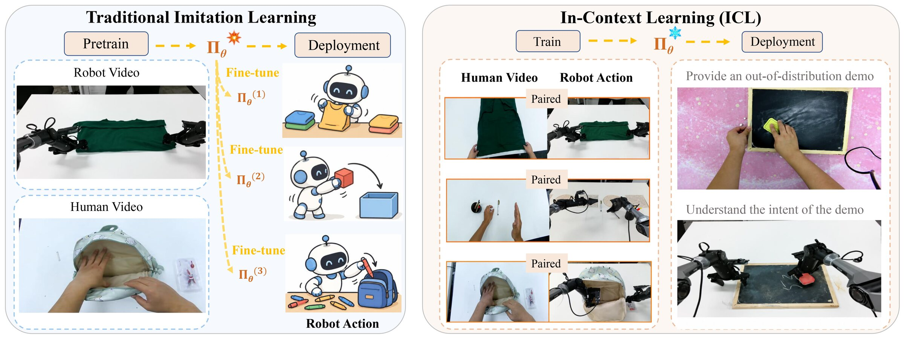

In-Context Learning for Embodied Agents: Methods, Benchmarks, and Open Challenges
- 1Shanghai Jiao Tong University
- 2The University of Hong Kong
- 3Manifold AI
- 4Fudan University
- 5CoreNetic AI
- 6Coowa Tech
- 7Gamma Robotics
- 8TeleAI
- 9KeepOne AI
- 10Yale University
- 11UniX AI
- 12Inspire Robots Technology
- 13EFORT Intelligent Robot
- 14The University of Tokyo
- 15Bauhaus-Universität Weimar
- 16Politecnico di Milano
- 17Università della Svizzera italiana
- 18Nanyang Technological University
- 19University of Cyprus
- 1

- 2

- 3
- 4

- 5CoreNetic AI
- 6
- 7Gamma Robotics
- 8
- 9KeepOne AI
- 10
- 11
- 12
- 13
- 14
- 15
- 16
- 17
- 18

- 19University of Cyprus
* Equal contribution † Corresponding author · yanjunchi@sjtu.edu.cn

Abstract
Embodied in-context learning (Embodied-ICL) studies whether a robot can adapt at deployment by conditioning on test-time context while keeping its policy weights fixed. Unlike the standard imitation learning paradigm that relies on finetuning for new tasks, these methods treat context, e.g. language, images or video, demonstrations, and retrieved experience, as a behavioral interface that can specify what to do, disambiguate state, or directly convey a new action mapping. This survey proposes an operational definition that separates true context-driven adaptation from mere additional inputs, then organizes recent systems along two axes: the form of context, and a threefold taxonomy of the role context plays at deployment — specifying the task, representing state, or specifying behavior — and extends this taxonomy beyond arm manipulation to legged and humanoid locomotion, navigation, aerial control, and driving. We summarize evaluation practice, recurring failure modes, and open challenges in cross-task generalization and protocols that separate context-driven adaptation from fixed-policy execution.
Index terms · In-Context Learning, Robot Learning, VLA
Understanding
Understanding Embodied ICL
Adapt through context.
§II · Definition
An embodied agent adapts to a new task or situation through deployment-time context while its policy weights stay fixed. Context must change what the agent can infer or do; an extra input alone does not establish learning.
Read every method on two axes.
§III–IV · Forms and roles
Each system is described by the form its context takes and the role that context plays at deployment. Self-built context and deployment updates are recorded as separate distinctions.
Look beyond the arm.
§V · Beyond manipulation
The same taxonomy extends to legged and humanoid locomotion, navigation, aerial control, and driving.
Test what context changes.
§VI · Evaluation
Graded novelty, cross-task evaluation, and diagnostics with wrong or missing context separate context-driven adaptation from fixed-policy execution.
Six open problems.
§VII · Open problems
Where in-context ability comes from, which training diversity transfers, how to move beyond trajectory imitation, how to select and compress context, how context and optional gradients interact, and how evaluation reaches beyond arm manipulation.
Framework
Two questions about context.
Our manuscript asks two questions of every method: what form the evidence takes, and what it changes at deployment. Each entry opens the matching papers.
01 · Form of contextWhat does the agent receive? §III
Text
Language as evidence
Instructions, structured descriptions, and verbal feedback convey evidence in language.
KAT · RoboPrompt · StellaVLA
Visual
Images and video
Images and video communicate goals, demonstrated actions, or visual progress.
BC-Z · Vid2Robot · Zero-WAM
Trajectory
Observation–action sequences
Sequences of observations, actions, and interaction outcomes expose how to act.
ICRT · Instant Policy · BPP · RoboSSM
Multimodal
Combined modalities
Language, vision, and demonstrations combine to specify complementary information.
VIMA · π0.7 · GPT-Policy
02 · Role at deploymentWhat does that evidence specify? §IV-A
Task specification
What to do
Context identifies the intended goal or task for an already capable policy.
Zero-WAM · HOST · π0.7
State representation
What is happening
Context lets the agent infer hidden state, dynamics, or task progress.
CAPTURE · ICWM · GVL
Behavior specification
How to act
Context conveys an action mapping or execution pattern inferred from examples.
ICRT · Instant Policy · RICL
03 · Further distinctionsRecorded alongside both axes · §IV-B, §IV-C
Self-built context
Experience becomes evidence
The agent constructs context from its own interactions, feedback, and reflections, kept separate from the role that context then serves.
Reflexion · ExpeL · MEMENTO
Gradients at deployment
What gets updated
Gradient-free conditioning keeps weights fixed. Update-optional methods may add adaptation steps; update-dependent methods require them.
RICL · BPP · RoboTTT
The axes intersect: one context form can serve different roles, and one role can use different forms. Counts and assignments come only from examples our manuscript assigns explicitly.
Paper library · All __PAPER_COUNT__ works retained
Explore the research
Start from the survey map, which follows our manuscript’s sections, or search the full collection. __MAPPED_COUNT__ works have an explicit manuscript roadmap mapping.
Survey map
The roadmap as a growing tree
From the root, branches follow our manuscript’s sections, sub-branches its subsections, and each leaf is a roadmap example placed by year. Select a branch to filter the papers below, or a leaf to open that work.
- ICRTIn the __PAPER_COUNT__-work collection
- AdANamed in our manuscript, outside the collection
- +2Daily candidates, pending human review
Built from our manuscript roadmap data. Years follow the external survey record where a work is in the collection, otherwise our manuscript’s citation. The daily research agent grows only the dashed tips; an editor grafts a candidate onto its branch after checking its form and role against the paper.
__PAPER_COUNT__ references
__ANNOTATED_COUNT__ entries include external-source reading notes.
Our manuscript’s roadmap supplies the conceptual axes. All __PAPER_COUNT__ works from the external survey’s bibliography remain available, including works whose mapping is pending. External reference numbers, original groups, and date provenance (__YEAR_RANGE__) are preserved. Our roadmap also names 29 additional works outside this inventory; see the complete roadmap data. Source identities.
No references match these filters
Try a broader term or clear the filters to see the full collection.
How to read this collection
Look closely at what actually adapts.
Our manuscript defines the framework. The collection preserves a broader external bibliography, including methods, comparisons, datasets, benchmarks, and foundations. An entry’s inclusion alone does not establish context-driven adaptation.
Read the editorial standardContext is part of the method
One demonstration and thousands of interaction steps have different costs. We show context budgets supported by the cited external survey passage; missing values remain unrecorded.
Training and deployment are separate
A method can require extensive offline training to use context. Some surveyed comparisons update parameters; each annotated record states the regime supported by its external survey passage.
Results need their setting
Only selected references have research annotations. A bibliography entry alone does not establish the experiment, its results, or its deployment update regime.
Citation
Cite the survey
@article{shen2026embodiedicl,
title = {In-Context Learning for Embodied Agents:
Methods, Benchmarks, and Open Challenges},
author = {Shen, Jiakang and Yang, Zhenjie and Su, Haisheng and
Jia, Xiaosong and Wang, Ruoshui and Yang, Xue and
Cai, Panpan and Lian, Wenzhao and Xie, Wende and
Bai, Chenjia and Zhang, Qiang and Yang, Fengyu and
Cai, Yinpeng and You, Wei and Zheng, Yinqiang and
Rabczuk, Timon and Yang, Xiaokang and Alippi, Cesare and
Ong, Yew-Soon and Polycarpou, Marios and Yan, Junchi},
note = {Manuscript},
year = {2026}
}